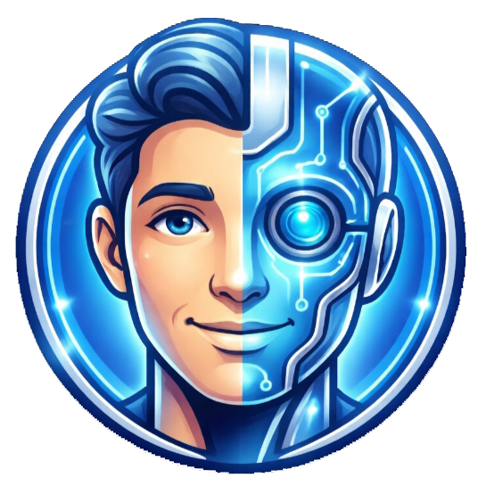

الرعاية الصحية، بصيغة رقمية
DIGITAL HEALTH ECOSYSTEM
منظومة رقمية متكاملة
لخدمات الصحة
ثلاث منصات... تجربة رقمية واحدة
حلول رقمية صُممت لتسهيل الوصول إلى الخدمة والمعلومة والتوعية الصحية.
00:00:00
المنصة الرئيسية ✦
PLATFORM 01 — FLAGSHIP متصل الآن
01
المنصة الرقمية
للخدمات الصحية
منطقة الوايلي الطبية

PLATFORM 02 متصل الآن
02
المساعد الذكي
لمكاتب الصحة

PLATFORM 03 متصل الآن
03
منصة التوعية
الأسرية
معلومة صحية لكل بيت
اكتشف المنظومة
A CONNECTED EXPERIENCE
اختر تجربتك
كل منصة تؤدي دوراً مختلفاً، ضمن رؤية واحدة للرعاية الأكثر قرباً.
ONE VISION · THREE PLATFORMS
التقنية عندما تُصمم
لخدمة الإنسان
منصة واحدة لا تكفي...
لذلك صممنا منظومة متكاملة.
الخدمات الصحيةالمساعد الذكيالتوعية الأسرية
استكشف المنصات الثلاث ↓